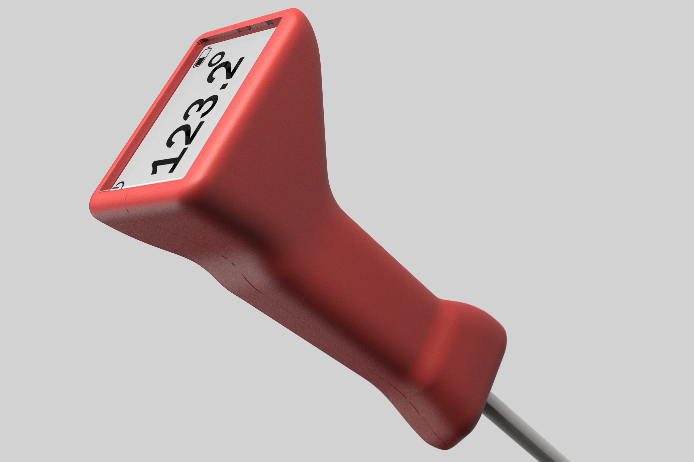
From rare to well — you'll know when it's done.
Meat thermometers are utility objects masquerading as tools. Most are clinical, forgettable, and designed to disappear into a drawer. But the moment of using one — standing at the grill, checking the roast — is a moment of anticipation. The product should match the energy of that moment.
A competitive scan of the category confirmed it: Thermapen, ThermoPro, MEATER, OXO. All of them functional. None of them speak to what it actually feels like to cook. The product category has never matched the energy of the context it lives in.
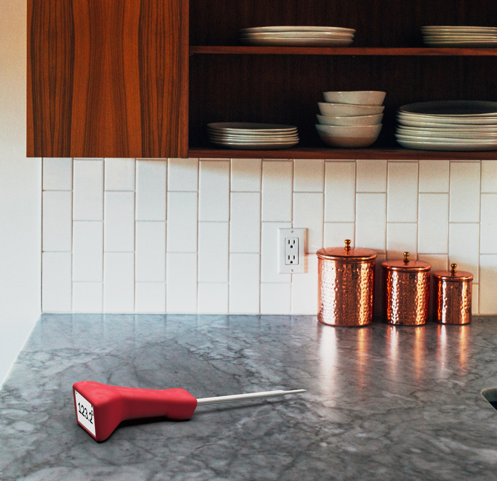
The product in context — designed to live on the counter, not hide in a drawer
DONE. A cooking pun and a product promise. From rare to well — you'll know when it's done.
The research pointed to one insight: this product has one job — tell you the temperature. The brief became about doing that job loudly, with a product that actually belongs in the context it's used in. Five criteria shaped everything that followed.
The product's one job is to display temperature
Large, face-forward display — readable from across the grill
Used while gripping or set flat on a surface
Ergonomic handle that works in both positions
The product should feel like it belongs in a considered kitchen
Minimum four colorways — not just the standard black and white
Category packaging is universally clinical and disposable
Premium hang card — packaging that earns shelf space
Every element of the product should reinforce one message
Singular branding promise: DONE.
I explored a wide range of handle concepts through sketching — clip-on forms, probe-forward layouts, pistol-grip ergonomics, rotating display heads. The sketch spread moved quickly from utility shapes toward something more considered: an ergonomic handle with a distinctly large, face-forward display and a gentle angled geometry that reads the temperature clearly whether the thermometer is upright or flat on a surface.
Four directions were developed far enough to evaluate. The angled fixed-face handle was selected — it solved the dual-position legibility problem without the mechanical complexity of a rotating head, and its geometry made the display the undeniable primary feature of the product.
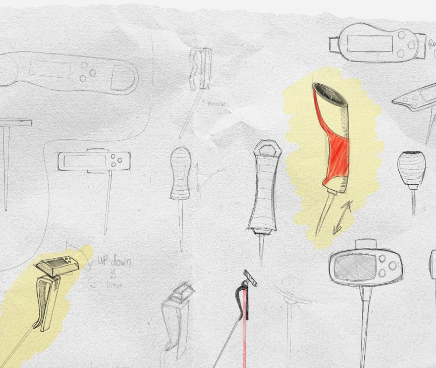
Concept exploration — clip-on · pistol-grip · rotating head · angled fixed-face selected
Before committing to SolidWorks, I built multiple foam handle models to test shape, feel, and ergonomics in hand. This stage was critical — the final handle geometry came directly from foam, not from a screen. The ergonomic waist, the angular transition to the display head, the balance point — all resolved in foam first.
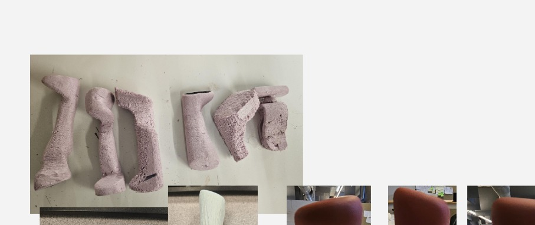
Four foam iterations — shape, waist, and head angle explored through carving and sanding
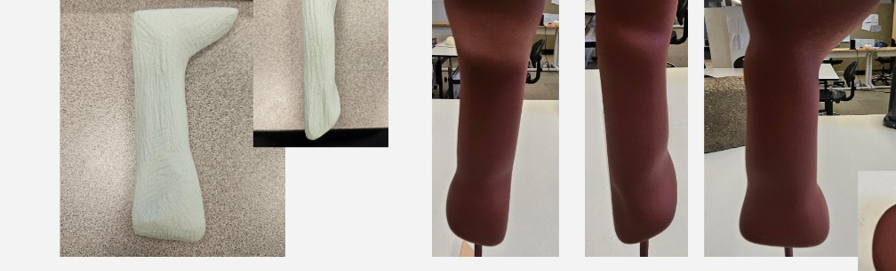
Near-final form in white foam, then translated to the finished model
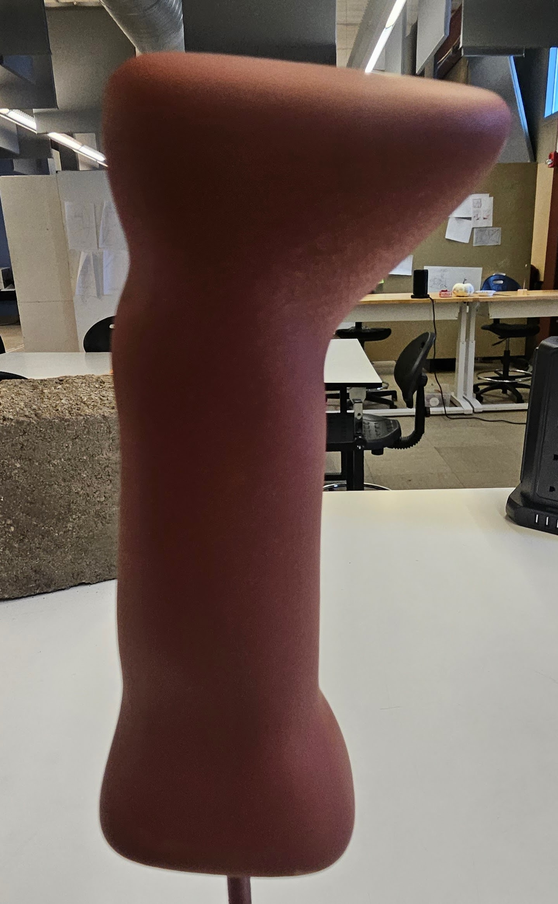
Final foam model — front view, angled display head clearly resolved
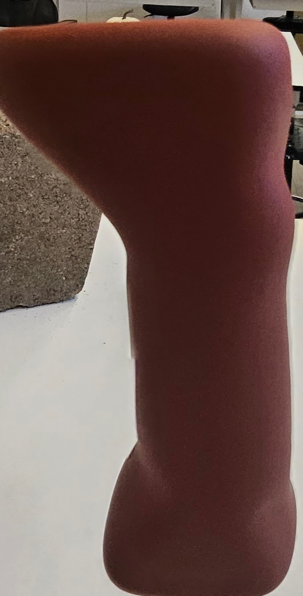
Side profile — the ergonomic waist and head angle that translated directly to CAD
The foam modeling phase made a better product than I would have gotten going straight to CAD.
DONE. is a digital probe thermometer with a large, square face display, ergonomic handle in five colorways, and a kraft hang-card package. The display shows temperature at a glance; the handle fits naturally in hand whether you're gripping it at the grill or setting it flat on a counter.
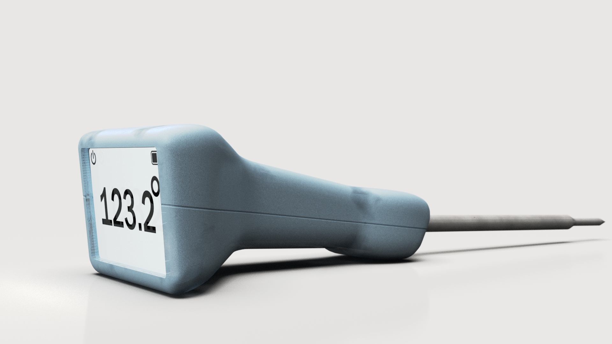
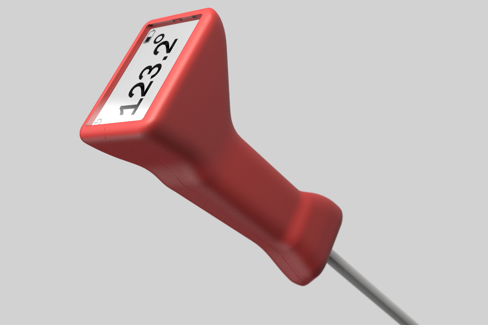
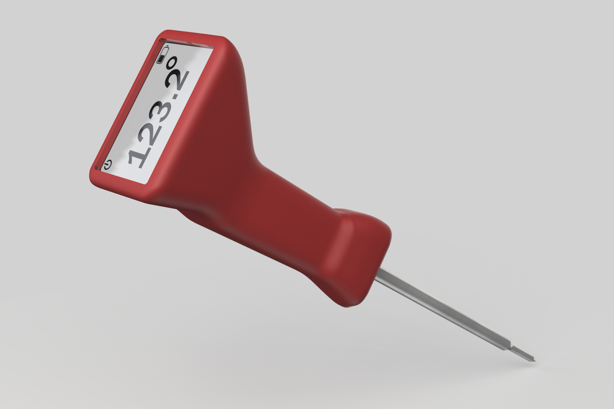
Red · Pink · Taupe/Grey · Teal · Mint. Five colorways from the same base geometry — designed to live on a counter, not hide in a drawer. The colorways aren't cosmetic. They're the product saying it belongs somewhere considered.
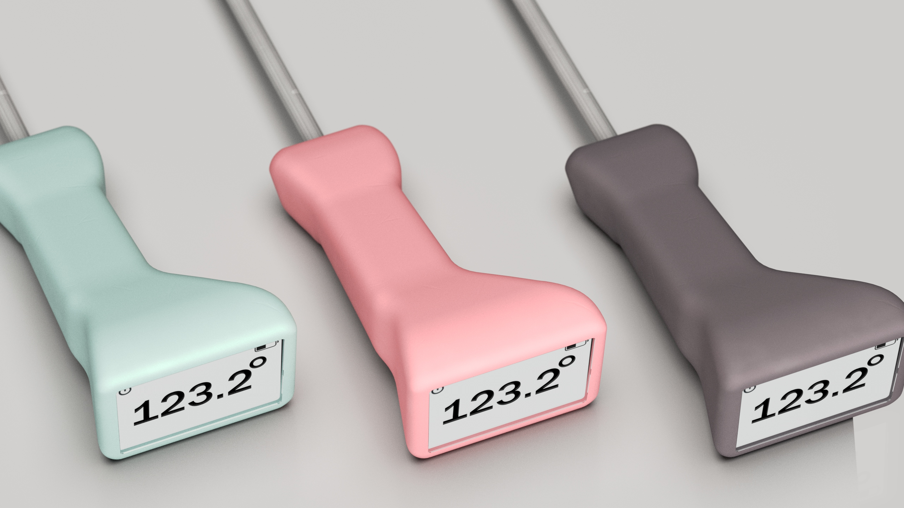
Mint · Pink · Taupe/Grey — three of five colorways
Body shell · PCB + screen · Display lens · Steel probe. Four components. The exploded view makes the product's simplicity legible — there's nothing here that doesn't have a reason to be there.
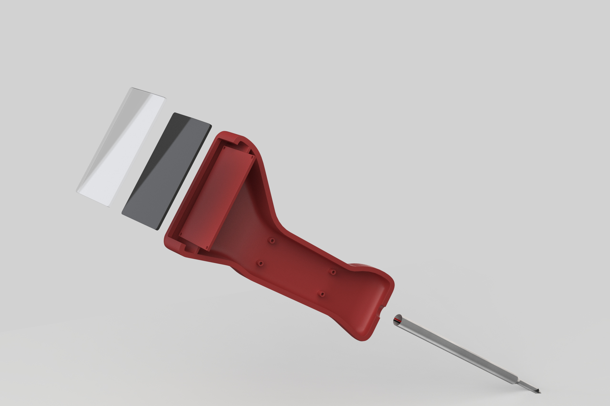
Exploded — body shell · PCB + screen · display lens · steel probe
Packaging was prototyped in parallel using kraft cardboard hang cards. Multiple iterations tested the window cutout size and shape, the hang hole proportion, and the "DONE." branding placement. The final packaging render uses a warm kraft card with laser-etched typography — premium but approachable.
Kraft hang card — laser-etched typography, window cutout showing the product
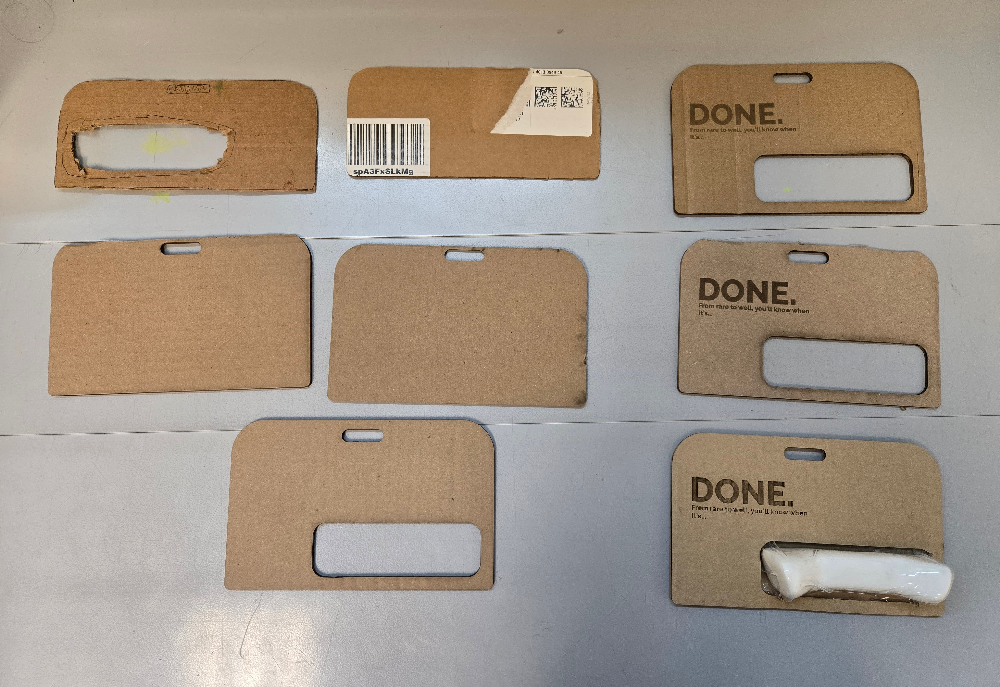
Seven iterations — refining window cutout size, hang hole proportion, and branding placement
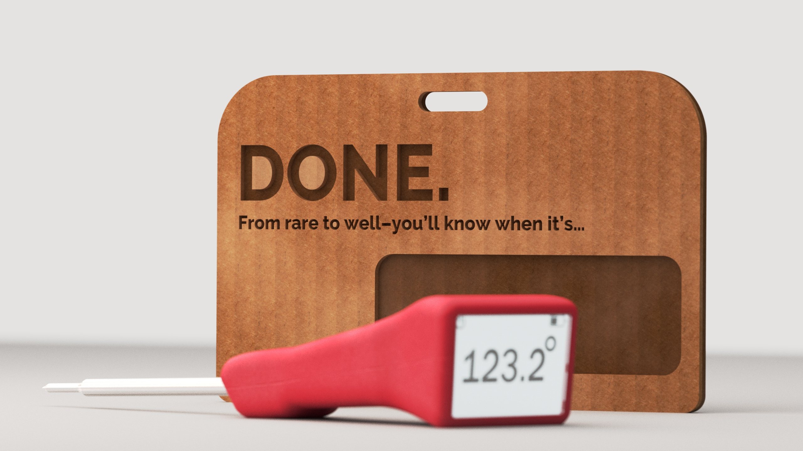
Final packaging render
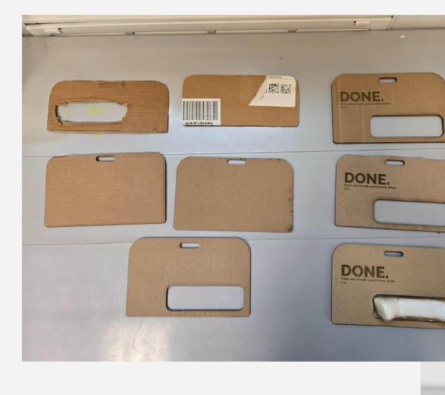
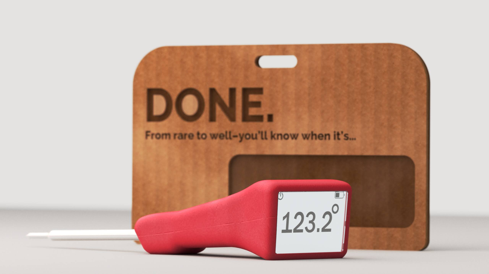
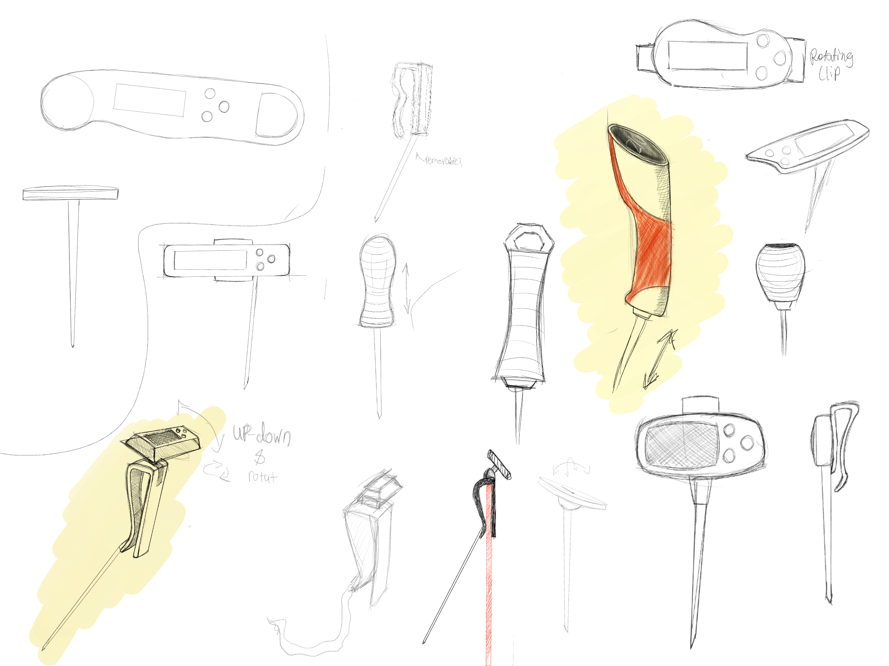